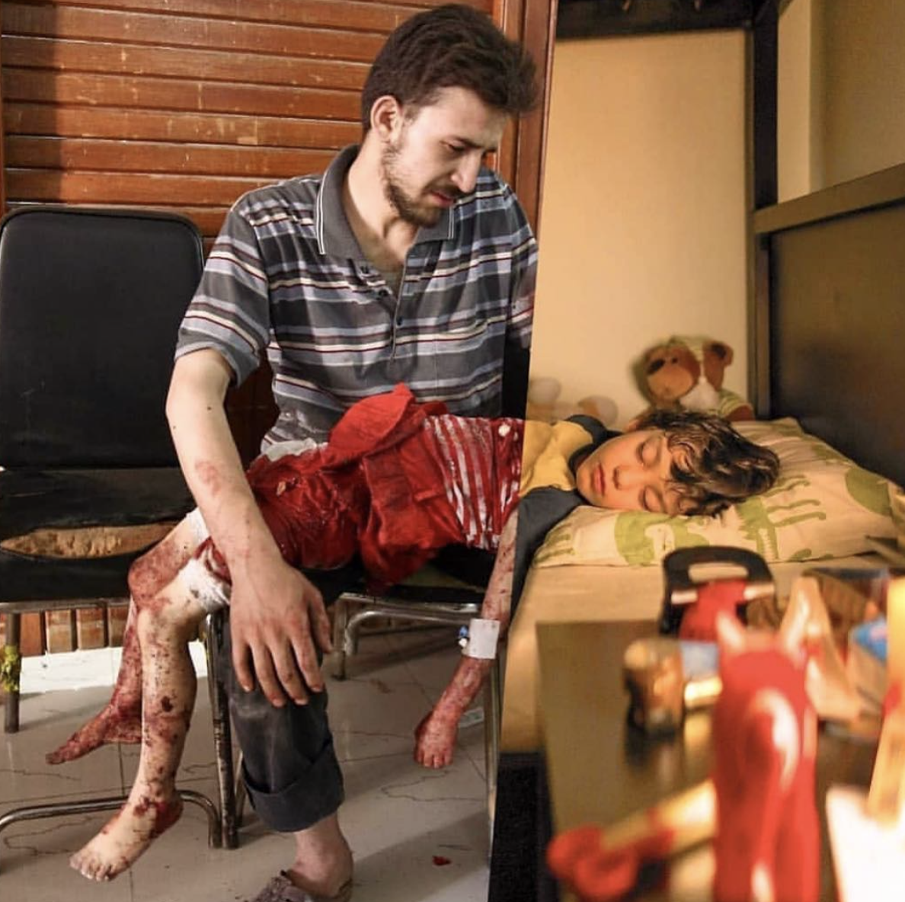

Rooftop Gardens

At first sight, Hajjah seems a quiet place to live as a child. The city, located 127 kilometers northwest of Sana'a, the capital of Yemen, offers breathtaking views over the surrounding mountains and green valleys, which used to attract many visitors before the conflict escalated in 2015 and before...